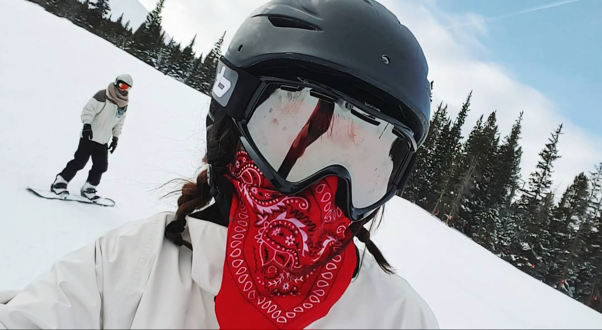

Born and raised in Colorado, I've been on the mountain for as long as I can remember. From skiing to snowboarding, sledding to snowshoeing,
I've always embraced the opportunities on the mountain and found ways to have fun in some of the worst types of weather.

Concerts
With Red Rocks just around the corner from Boulder, it's hard to not become a concert junkie in Colorado! I believe the variety of music you can
find here is unmatched anywhere else in the country. If I'm not working on a weekend, you might find me checking out a local band or a well known
artist at the many venues in and around Denver.
Hiking / Camping
In the warmer months you may catch me back on the mountain for some fun in the sun! The local trails offer a peace of mind from the inner cities and
a way to enjoy the beauty on the land. Some of my favorite trails include Horsetooth mountain and Horsetooth falls, as well as some others in
Boulder county.
Traveling
I also love to travel, as most people do. I haven't been outside of the country very many times, but that is sure to change soon as I am about
to graduate. Of the places I have been within the United States and outside, my favorite places I've seen have been the ruins in Tulum, Mexico, the
bustling city of New Orleans, Louisiana, and the quaint area of Mackinac Island, Michigan.